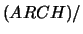

First, configure and compile SYMPHONY 5.0 as described in SYMPHONY-5.0/README-5.0. Modify the variables in the USER/Makefile appropriately. Typing "make" in the USER subdirectory should successfully make the USER executable. It will be installed in the directory SYMPHONY-5.0/USER/bin.(LP_SOLVER). After you've successfully compiled the code, you can develop our custom application by following the instructions for filling in the user callback functions as described in Section 6.